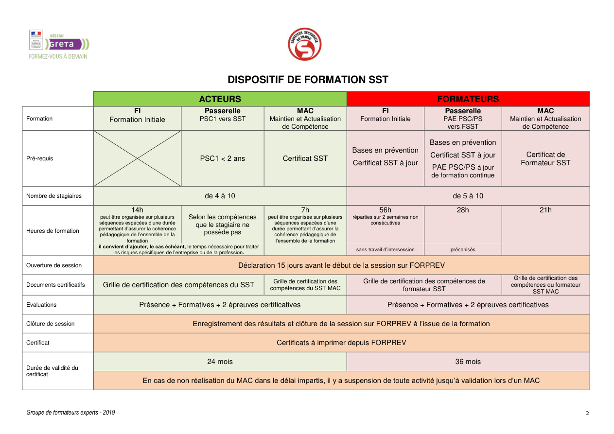

PI SST simplifié
Décider en moins de 5 secondes
➡️ Le PI soutient la décision, il ne remplace pas l’observation : je regarde le signe majeur, puis j’agis.
Repères SST / INRS
PI et visuels de conduite à tenir


Outil intervention
À quoi sert le PI ?
Le PI sert à relier immédiatement un signe majeur à la conduite à tenir, à l’alerte et à la surveillance. Il reste visible dans C5 et accessible dans l’espace outils.
Pont prévention
Le PAP n’est pas perdu
Après le geste, la prévention reprend : les situations secourues doivent alimenter la remontée C8 pour éviter la répétition du même événement.
Situation C5
🩸 Saignement abondant
🩸Je vois du sang abondant, qui coule ou jaillit.
Geste terrain : compression immédiate, continue, sans attendre le matériel.
Situation C5
🫁 Étouffement
🫁La victime ne parle plus, ne tousse plus, porte les mains à la gorge.
Geste terrain : 5 claques dorsales puis compressions adaptées à l’âge.
Situation C5
🫀 Malaise
🫀Douleur thoracique, trouble de la parole, pâleur, sueurs, confusion.
Geste terrain : repos, questionnement bref, alerte si signe grave, surveillance.
Situation C5
🔥 Brûlure
🔥Rougeur, douleur, cloque, brûlure chimique, électrique ou étendue.
Geste terrain : refroidir rapidement, protéger, alerter si localisation ou cause grave.
Situation C5
🦴 Douleurs empêchant certains mouvements
🦴Douleur vive, membre immobile, déformation, impossibilité de mobiliser.
Geste terrain : laisser dans la position trouvée, éviter toute mobilisation inutile, alerter si besoin.
Situation C5
🩹 Plaies qui ne saignent pas abondamment
🩹Plaie simple, coupure limitée, éraflure, plaie superficielle sans hémorragie.
Geste terrain : protéger, nettoyer selon protocole local, couvrir et surveiller.
Situation C5
🛏️ Inconscience
🛏️La victime ne répond pas mais respire normalement.
Geste terrain : PLS, alerte, surveillance rapprochée.
Urgence vitale
⚡ Arrêt cardiaque
⚡La victime ne répond pas et ne respire pas normalement.
Geste terrain : faire alerter, masser immédiatement, préparer le DAE dès qu’il arrive.
Équipement critique
📟 Défibrillateur automatisé externe (DAE)
📟Le DAE doit être posé dès son arrivée, sans interrompre inutilement le massage.
Geste terrain : allumer, poser les électrodes, suivre les consignes, reprendre le massage immédiatement après analyse ou choc.
Cas concret
Scène complète atelier + secours + prévention
Situation : un salarié chute avec douleur de cheville, un témoin stressé gêne l’accès et une flaque rend la zone glissante.
Décision : protéger la zone, examiner le signe majeur, faire alerter, respecter la position douloureuse ou basculer vers une autre conduite si l’état se dégrade.
Après l’action : l’événement repart en C8 pour tracer la flaque, l’organisation du flux et la mesure de prévention attendue.
Point final à retenir
- Chaque situation C5 part d’un signe majeur, pas d’un long discours.
- Le PI soutient la décision et garde l’ordre d’action stable.
- Le retour prévention via C8 complète l’intervention et rend l’outil crédible jusqu’au bout.
Pour consolider
Le parcours est complet : prévention, remontée, protection, examen, alerte et techniques de secours. Utilisez ensuite les fiches réflexes ou le mode urgence pour l’entraînement terrain.